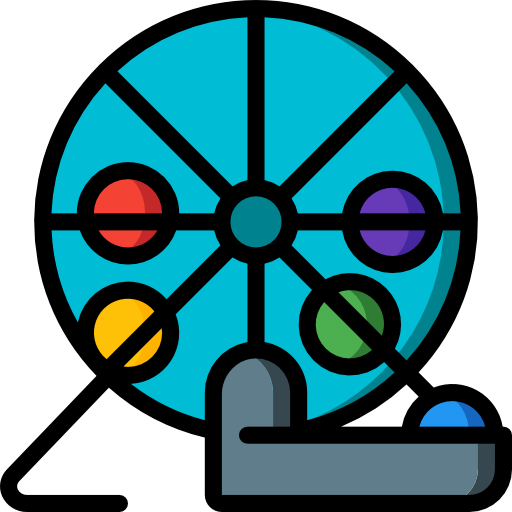
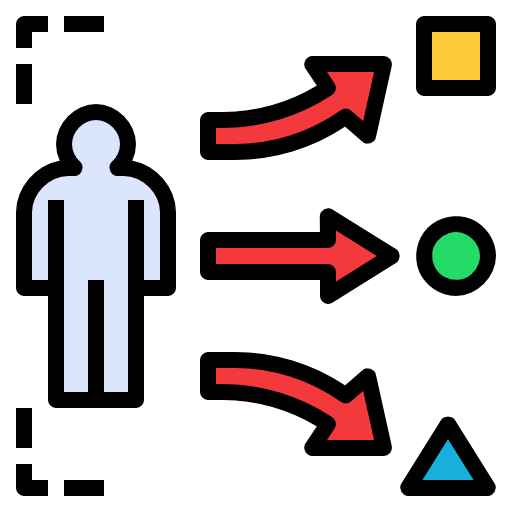

EMPAREJAMIENTO
Haga clic sobre el concepto y luego en la definición correspondiente, al finalizar pulse la opción "Calificar" para conocer su puntuación.
-
Tómbola
-
Números aleatorios
-
Elección o clasificación sistemática de factores o elementos muestrales
-

A través de este procedimiento se enumeran todos los elementos muestrales desde el 1 al número n. Y se pueden hacer fichas, una por cada componente, revolverlos e ir sacando cierta cantidad de fichas y los números elegidos conformarán la muestra a trabajar. Esto se debe hacer teniendo en cuenta el tamaño de la muestra.
-
Aquí se utiliza una tabla numérica la cual relaciona un componente de probabilidad previamente diseñado y como su nombre lo indica la dinámica es aleatoria.
-

Ya en este apartado, se elige o se escoge dentro de la población N un número o cifra n de factores o elementos, tomando como punto de partida un intervalo K, donde K se determinaría por la dimensión o tamaño de la muestra. Por lo que, K=N/n, siendo K= intervalo de clasificación o elección sistemática, donde N sería la población y n la muestra.